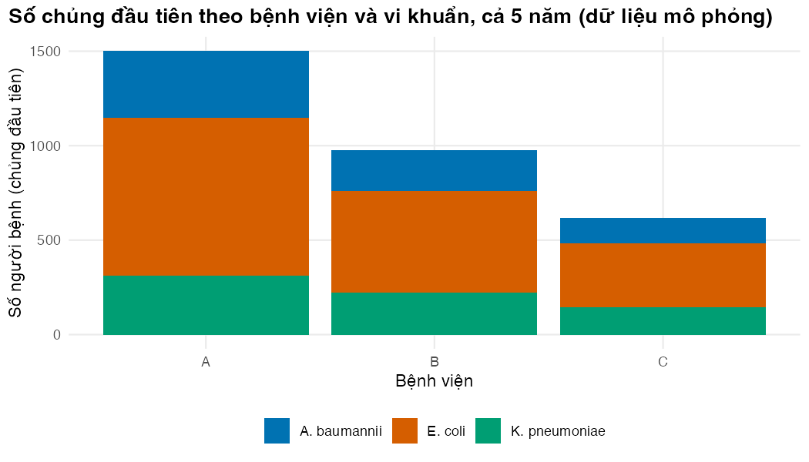
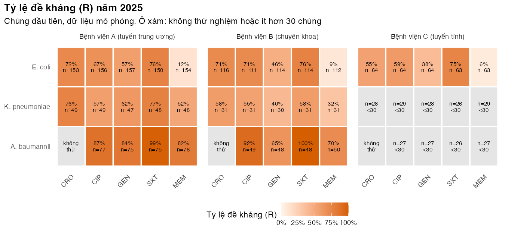
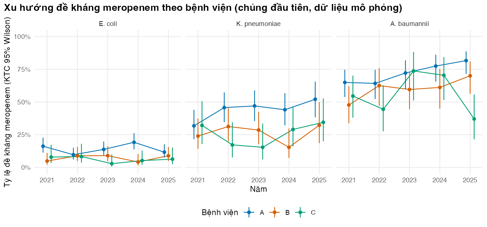
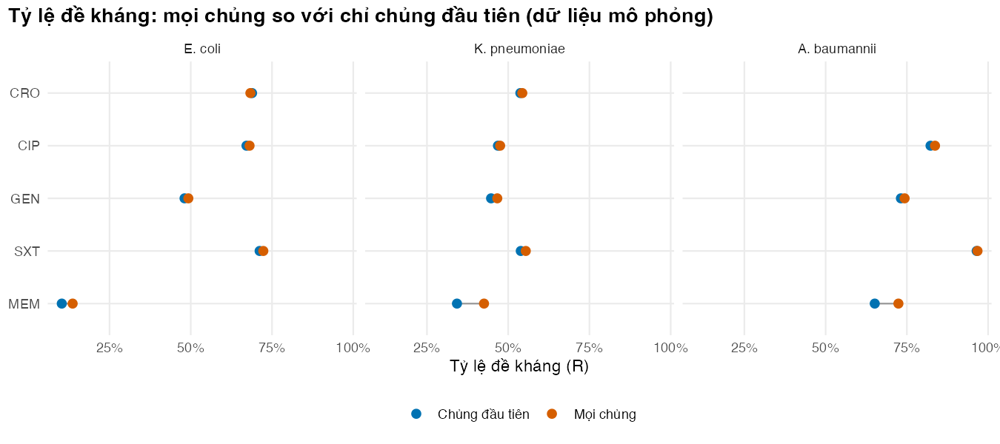
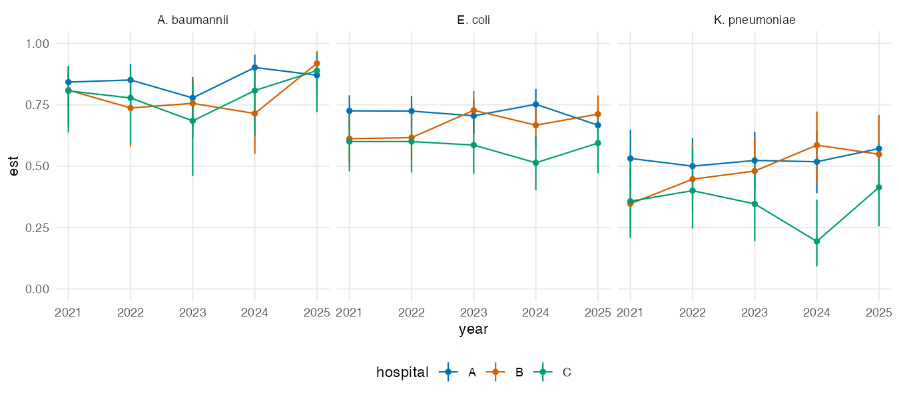
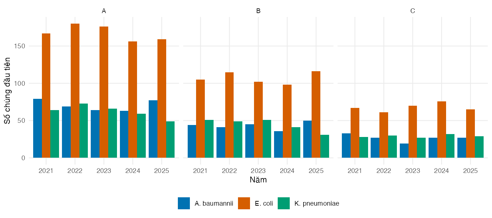
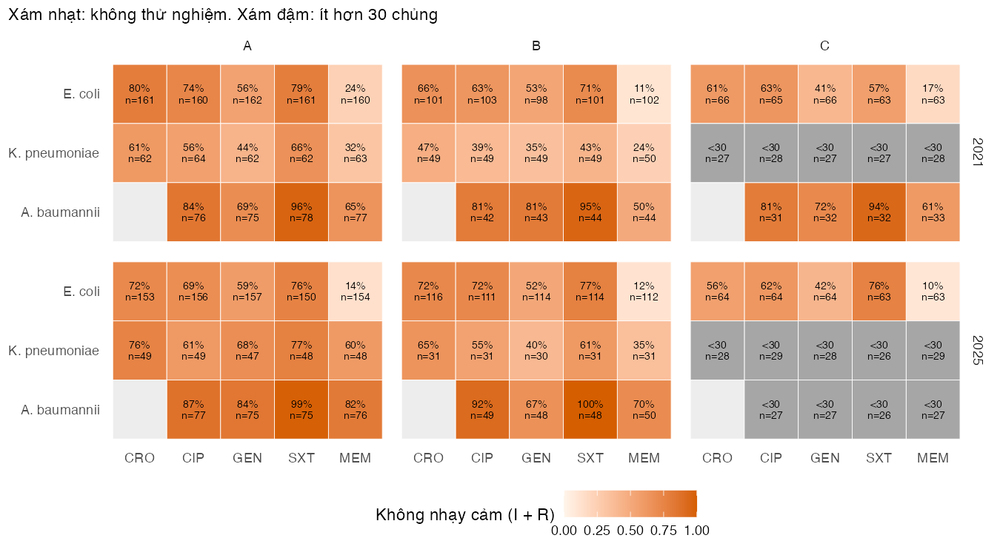

if (!isTRUE(l10n_info()[["UTF-8"]])) invisible(Sys.setlocale("LC_CTYPE", "en_US.UTF-8"))
source("../_shared/R/helpers.R")
source("../_shared/R/vn_data.R")
source("code/model.R")
options(warnPartialMatchDollar = TRUE) # `$` that silently matches a shortened name now warns
library(ggplot2)
p_sim <- read_params("params/amr_sim.csv")
ref <- read_params("params/reference_data.csv")
iso <- simulate_isolates(p_sim, seed = 2025) # clean data (Lesson 4 shows the cleaning)
first <- first_isolates(iso)
long <- to_long(first)
abx_levels <- names(ANTIBIOTICS)
org_levels <- unname(ORGANISMS)Bài 5: Biểu đồ với ggplot2
Vẽ bản tổng kết mức độ nhạy cảm kháng sinh, xu hướng đề kháng có khoảng tin cậy, và dùng giao diện chung của khóa học
Vì sao bạn nên quan tâm?
Mỗi năm, bản tổng kết mức độ nhạy cảm kháng sinh của bệnh viện được dán ở phòng trực ICU, và bác sĩ trực nhìn vào đó để chọn kháng sinh trong những giờ đầu cho người bệnh nhiễm khuẩn huyết. Theo khảo sát toàn quốc, khoảng 37% chủng K. pneumoniae đã kháng carbapenem (Larsson và c.s. 2025); một bệnh viện tỉnh chỉ có vài chục chủng mỗi năm có thể thấy tỷ lệ năm nay “tăng vọt” chỉ do ngẫu nhiên. Nếu biểu đồ không ghi số chủng và khoảng tin cậy, hội đồng có thể chuyển cả ICU sang colistin, mỗi ngày đắt gấp 23 lần meropenem generic theo giá trúng thầu quy về năm 2025 (Bệnh viện Trung ương Thái Nguyên 2023; Bệnh viện Đa khoa khu vực Củ Chi 2024). Bài này dạy vẽ antibiogram và xu hướng kèm n và KTC, để người đọc phân biệt tín hiệu thật với nhiễu.
Mục tiêu học tập
Sau bài này, bạn có thể:
- Giải thích các lớp của một biểu đồ
ggplot2: dữ liệu, ánh xạ thẩm mỹ, hình học, thang đo, chia ô và giao diện. - Vẽ bản tổng kết mức độ nhạy cảm kháng sinh (antibiogram) dạng bản đồ nhiệt, đánh dấu ô không thử nghiệm và ô có quá ít chủng.
- Vẽ xu hướng tỷ lệ đề kháng theo năm kèm khoảng tin cậy, tách theo bệnh viện và theo loài.
- Áp dụng
theme_course()và bảng màupal_course, rồi lưu hình bằngsave_fig().
Ý chính
ggplot2xây biểu đồ theo lớp:ggplot(dữ liệu, aes(...)) + geom_...() + scale_...() + facet_...() + theme_...()(Wickham 2010).- Ánh xạ (
aes(colour = hospital)) nối một cột dữ liệu với một thuộc tính hình ảnh. Đặt cố định (colour = "red"bên ngoàiaes()) áp một giá trị cho mọi điểm. Nhầm hai cách này là lỗi phổ biến nhất. ggplot2cần dữ liệu dạng dài: mỗi dòng là một điểm hoặc một ô cần vẽ. Đó là lý do Bài 4 chuyển dạng dữ liệu.- Một tỷ lệ không kèm cỡ mẫu và khoảng tin cậy dễ bị hiểu sai. Hãy hiển thị
nvà KTC. - Theo khuyến cáo của Clinical and Laboratory Standards Institute (CLSI), được Tran và cộng sự trích dẫn, bản tổng kết tích lũy chỉ nên báo cáo nhóm có ít nhất 30 chủng (Tran và c.s. 2023).
- Bảng màu phải phân biệt được với người mù màu.
pal_coursedùng các màu Okabe-Ito (Okabe và Ito 2008). - Mọi hình được tạo bằng mã và lưu bằng
save_fig(). Không chỉnh hình bằng tay.
Nội dung
Ngữ pháp đồ họa
ggplot2 hiện thực hóa “ngữ pháp đồ họa theo lớp” (Wickham 2010). Một biểu đồ gồm: dữ liệu; ánh xạ thẩm mỹ (aes) từ cột sang vị trí x, y, màu, kích thước; hình học (geom_point, geom_line, geom_tile, geom_bar) quyết định vẽ gì; thang đo (scale_*) quyết định giá trị biến thành màu hay nhãn trục ra sao; chia ô (facet_wrap) lặp lại biểu đồ cho từng nhóm; và giao diện (theme) cho các phần không phải dữ liệu như phông chữ, lưới, vị trí chú giải. Sách ggplot2: Elegant Graphics for Data Analysis trình bày đầy đủ cách tiếp cận này (Wickham, Navarro, và Pedersen không ngày).
Đọc một lệnh ggplot() từ trái sang phải như đọc một câu: “lấy bảng first, đặt bệnh viện lên trục x, tô màu theo loài, vẽ cột đếm số dòng, dùng bảng màu của khóa học, đặt nhãn tiếng Việt, áp giao diện của khóa học”.
Bản tổng kết mức độ nhạy cảm kháng sinh
Bản tổng kết mức độ nhạy cảm kháng sinh tích lũy (cumulative antibiogram) là bản tóm tắt thường niên tỷ lệ nhạy cảm theo loài × kháng sinh tại một cơ sở y tế, dùng để theo dõi xu hướng đề kháng tại chỗ và hỗ trợ quyết định lâm sàng và kiểm soát nhiễm khuẩn (Hindler và Stelling 2007). Theo CLSI, bản tổng kết báo cáo tỷ lệ nhạy cảm (%S). Khóa học này vẽ tỷ lệ đề kháng (%R), vì dữ liệu giám sát và đầu vào của mô hình dùng đề kháng; khi có kết quả I, %R không bằng 100% − %S. Bản đồ nhiệt (geom_tile) đọc nhanh hơn bảng số: màu đậm là tỷ lệ đề kháng cao. Ba quy tắc trình bày: (1) mỗi ô ghi cả tỷ lệ lẫn n; (2) ô không thử nghiệm để trống, không tô màu như tỷ lệ 0%; (3) ô có ít hơn 30 chủng được đánh dấu thay vì báo cáo như bình thường, vì tỷ lệ tính trên ít chủng dao động rất mạnh (Tran và c.s. 2023).
Xu hướng có khoảng tin cậy
Khi so sánh tỷ lệ đề kháng giữa các năm và các bệnh viện, mỗi điểm cần kèm KTC. Nếu không, một bệnh viện nhỏ với vài chục chủng có thể trông như có “đợt tăng vọt” chỉ do ngẫu nhiên. geom_pointrange() vẽ điểm cùng KTC; position_dodge() dịch nhẹ các bệnh viện để thanh KTC không đè lên nhau; facet_wrap(~organism) tách mỗi loài thành một ô.
Giao diện chung của khóa học
theme_course() trong _shared/R/helpers.R là một hàm bình thường: nó lấy theme_minimal() rồi bỏ lưới phụ, đặt chú giải ở dưới và in đậm tiêu đề. pal_course là bảng tám màu Okabe-Ito. Dùng chung hai thứ này giúp mọi hình trong khóa học trông thống nhất. Bạn vẫn chỉnh được cho từng hình bằng cách cộng thêm theme(...).
Thực hành
Nạp dữ liệu sạch, giữ chủng đầu tiên và chuyển sang dạng dài, đúng như Bài 4.
Biểu đồ đầu tiên, xây từng lớp: dữ liệu và ánh xạ, hình học cột, thang màu, nhãn và giao diện. Kiểm tra: stopifnot() đọc chiều cao các cột từ chính đối tượng biểu đồ và xác nhận tổng bằng số chủng đầu tiên.
# data + aesthetic mapping + geometry; then scales, labels and theme as extra layers
fig_bar <- ggplot(first, aes(x = hospital, fill = organism)) +
geom_bar() +
scale_fill_manual(values = pal_course[1:3], name = NULL) +
labs(x = "Bệnh viện", y = "Số người bệnh (chủng đầu tiên)",
title = paste0("Số chủng đầu tiên theo bệnh viện và vi khuẩn, cả ", p_sim$n_years,
" năm (dữ liệu mô phỏng)")) +
theme_course()
save_fig(fig_bar, "l05-bar.png", width = 7, height = 4)
# Sanity check on the PLOT itself: the bar heights drawn by ggplot2 add up to the first isolates
stopifnot(sum(ggplot2::ggplot_build(fig_bar)$data[[1]]$count) == nrow(first))
Chuẩn bị dữ liệu cho bản tổng kết năm cuối: tóm tắt theo bệnh viện × loài × kháng sinh, ghép với lưới đầy đủ để các tổ hợp không thử nghiệm vẫn có một ô, rồi tạo nhãn. Kiểm tra: bảng chéo cho thấy bao nhiêu ô được báo cáo, bao nhiêu ô quá ít chủng, bao nhiêu ô không thử nghiệm.
last_year <- max(first$year)
abg <- resistance_summary(long[long$year == last_year, ],
by = c("hospital", "organism", "antibiotic"))
# Complete grid so that "not tested" combinations appear as empty cells
grid <- expand.grid(hospital = HOSPITALS, organism = org_levels, antibiotic = abx_levels,
stringsAsFactors = FALSE)
abg <- merge(grid, abg, all.x = TRUE)
min_n <- ref$min_isolates_report
abg$reportable <- !is.na(abg$n) & abg$n >= min_n
abg$label <- ifelse(is.na(abg$n), "không\nthử",
ifelse(abg$reportable, paste0(round(100 * abg$est), "%\nn=", abg$n),
paste0("n=", abg$n, "\n<", min_n)))
abg$fill <- ifelse(abg$reportable, abg$est, NA)
abg$antibiotic <- factor(abg$antibiotic, levels = abx_levels)
abg$organism <- factor(abg$organism, levels = rev(org_levels))
abg$hospital <- factor(paste0("Bệnh viện ", abg$hospital, " (", HOSPITAL_TYPES[abg$hospital], ")"))
table(reportable = abg$reportable, tested = !is.na(abg$n)) tested
reportable FALSE TRUE
FALSE 3 9
TRUE 0 33n_small_cells <- sum(!abg$reportable & !is.na(abg$n))
# The lesson says the only untested cells are A. baumannii x CRO, in all three hospitals
untested <- abg[is.na(abg$n), ]
stopifnot(nrow(untested) == length(HOSPITALS), all(untested$organism == "A. baumannii"),
all(untested$antibiotic == "CRO"))Năm 2025 có 9 ô có ít hơn 30 chủng; các ô đó tô xám và chỉ ghi n.
Vẽ bản đồ nhiệt: geom_tile() cho các ô, geom_text() cho nhãn, scale_fill_gradient() với na.value màu xám cho ô không báo cáo. Kiểm tra: ô A. baumannii × CRO ghi “không thử” ở cả ba bệnh viện.
fig_abg <- ggplot(abg, aes(x = antibiotic, y = organism, fill = fill)) +
geom_tile(colour = "white", linewidth = 0.8) +
geom_text(aes(label = label), size = 2.6, lineheight = 0.9) +
facet_wrap(~hospital) +
scale_fill_gradient(low = "#FFF5EB", high = pal_course[2], limits = c(0, 1),
labels = function(x) paste0(100 * x, "%"),
na.value = "grey90", name = "Tỷ lệ đề kháng (R)") +
labs(x = NULL, y = NULL,
title = paste0("Tỷ lệ đề kháng (R) năm ", last_year),
subtitle = paste0("Chủng đầu tiên, dữ liệu mô phỏng. Ô xám: không thử nghiệm hoặc ít hơn ",
min_n, " chủng")) +
theme_course() +
theme(panel.grid = element_blank(), axis.text.x = element_text(angle = 45, hjust = 1))
save_fig(fig_abg, "l05-antibiogram.png", width = 9, height = 4.2)
Dữ liệu cho biểu đồ xu hướng: tỷ lệ đề kháng meropenem theo bệnh viện × loài × năm, kèm KTC Wilson. Kiểm tra: ước lượng luôn nằm giữa hai cận.
trend <- resistance_summary(long[long$antibiotic == "MEM", ],
by = c("hospital", "organism", "year"))
trend$organism <- factor(trend$organism, levels = org_levels)
head(trend[, c("hospital", "organism", "year", "n_r", "n", "est")], 4) hospital organism year n_r n est
1 A A. baumannii 2021 50 77 0.6493506
2 B A. baumannii 2021 21 44 0.4772727
3 C A. baumannii 2021 18 33 0.5454545
4 A E. coli 2021 26 160 0.1625000stopifnot(all(trend$lo <= trend$est), all(trend$est <= trend$hi))
widest <- trend[which.max(trend$hi - trend$lo), ]KTC rộng nhất thuộc về A. baumannii ở bệnh viện C năm 2023: 19 chủng, KTC rộng 37.0 điểm phần trăm.
Vẽ xu hướng: đường nối các năm, điểm kèm KTC, mỗi loài một ô. Kiểm tra: trục y cố định từ 0% đến 100% ở mọi ô để so sánh được giữa các loài.
dodge <- position_dodge(width = 0.4)
fig_trend <- ggplot(trend, aes(x = year, y = est, colour = hospital)) +
geom_line(position = dodge) +
geom_pointrange(aes(ymin = lo, ymax = hi), position = dodge, size = 0.25) +
facet_wrap(~organism) +
scale_colour_manual(values = pal_course[c(1, 2, 3)], name = "Bệnh viện") +
scale_y_continuous(limits = c(0, 1), labels = function(x) paste0(100 * x, "%")) +
labs(x = "Năm", y = "Tỷ lệ đề kháng meropenem (KTC 95% Wilson)",
title = "Xu hướng đề kháng meropenem theo bệnh viện (chủng đầu tiên, dữ liệu mô phỏng)") +
theme_course()
save_fig(fig_trend, "l05-trend.png", width = 9, height = 4.2)
Biểu đồ “quả tạ” (dumbbell) so sánh tỷ lệ đề kháng tính trên mọi chủng với tỷ lệ tính trên chủng đầu tiên, cho từng loài × kháng sinh. Kiểm tra: stopifnot() xác nhận số cặp trên biểu đồ bằng số cặp loài × kháng sinh có thử nghiệm.
# All isolates versus first isolates: a "dumbbell" chart shows the bias from repeats
all_iso <- resistance_summary(to_long(iso))
dd <- merge(all_iso[, c("organism", "antibiotic", "est")],
resistance_summary(long)[, c("organism", "antibiotic", "est")],
by = c("organism", "antibiotic"), suffixes = c("_all", "_first"))
dd$antibiotic <- factor(dd$antibiotic, levels = rev(abx_levels))
dd$organism <- factor(dd$organism, levels = org_levels)
n_pairs <- nrow(unique(long[, c("organism", "antibiotic")])) # organism x antibiotic pairs tested
stopifnot(nrow(dd) == n_pairs)
fig_dedup <- ggplot(dd, aes(y = antibiotic)) +
geom_segment(aes(x = est_first, xend = est_all, yend = antibiotic), colour = "grey60") +
geom_point(aes(x = est_first, colour = "Chủng đầu tiên"), size = 2.4) +
geom_point(aes(x = est_all, colour = "Mọi chủng"), size = 2.4) +
facet_wrap(~organism) +
scale_colour_manual(values = c("Chủng đầu tiên" = pal_course[1], "Mọi chủng" = pal_course[2]),
name = NULL) +
scale_x_continuous(labels = function(x) paste0(100 * x, "%")) +
labs(x = "Tỷ lệ đề kháng (R)", y = NULL,
title = "Tỷ lệ đề kháng: mọi chủng so với chỉ chủng đầu tiên (dữ liệu mô phỏng)") +
theme_course()
save_fig(fig_dedup, "l05-dedup.png", width = 9, height = 4)
gap <- dd$est_all - dd$est_first
max_gap <- max(gap)
top_gap <- dd[which.max(gap), c("organism", "antibiotic")]
top_gap organism antibiotic
13 K. pneumoniae MEM
Biểu đồ có đủ 14 cặp (3 loài × 5 kháng sinh, trừ A. baumannii × CRO). Chênh lệch lớn nhất giữa hai cách tính là 8.3 điểm phần trăm, ở cặp K. pneumoniae × MEM. Điều này khớp với cách dữ liệu được mô phỏng: việc cấy lại phụ thuộc vào kết quả meropenem (xác suất cấy lại là giá trị minh họa).
Giao diện của khóa học chỉ là một hàm. In hàm ra để xem nó làm gì, rồi điều chỉnh cho một slide: chữ lớn hơn, chú giải bên phải. Kiểm tra: kết quả vẫn là một đối tượng ggplot, nên có thể lưu bằng save_fig().
# The course theme is an ordinary function that returns ggplot2 theme settings
theme_coursefunction (base_size = 11)
{
ggplot2::theme_minimal(base_size = base_size) + ggplot2::theme(panel.grid.minor = ggplot2::element_blank(),
legend.position = "bottom", plot.title.position = "plot",
plot.title = ggplot2::element_text(face = "bold"))
}
<bytecode: 0x107f59118># Adjust it for a slide: larger text, legend on the right
fig_slide <- fig_trend + theme_course(base_size = 14) + theme(legend.position = "right")
class(fig_slide)[1] "ggplot2::ggplot" "ggplot" "ggplot2::gg" "S7_object"
[5] "gg"
Mẹo thực hành
- Lưu biểu đồ vào một đối tượng (
fig_x <- ggplot(...)) rồi mớisave_fig(). Như vậy script chạy bằngRscriptkhông tạo tệpRplots.pdfthừa, và bạn có thể thêm lớp sau này. - Đặt thứ tự hiển thị bằng
factor(x, levels = ...)thay vì để R xếp theo bảng chữ cái. - Nhãn tiếng Việt cần locale UTF-8. Dòng
Sys.setlocale("LC_CTYPE", "en_US.UTF-8")ở đầu mỗi script lo việc này. - Nếu bạn vẽ bản đồ Việt Nam (ví dụ bằng
geom_sf()), phải thể hiện quần đảo Hoàng Sa thuộc thành phố Đà Nẵng và quần đảo Trường Sa thuộc tỉnh Khánh Hòa. Đây là quy định bắt buộc của khóa học.
Lỗi thường gặp
- Đặt màu bên trong
aes().aes(colour = "blue")tạo một nhóm tên “blue” với màu mặc định và một chú giải thừa. Màu cố định đặt bên ngoài:geom_line(colour = pal_course[1]). - Tô ô không thử nghiệm như 0%. Nếu không ghép với lưới đầy đủ, ô thiếu biến mất; nếu điền 0, người đọc tưởng không có đề kháng. Hãy để
NAvà tô xám. - Mỗi ô một thang trục y khác nhau.
facet_wrap(scales = "free_y")làm mắt người so sánh sai giữa các ô. Với tỷ lệ, cố định thang 0–100%. - Bỏ cỡ mẫu. Cùng một tỷ lệ, tính trên vài chục chủng hay trên vài trăm chủng, chứa lượng thông tin rất khác nhau.
Bài tập
Bài tập 1 (dễ). Vẽ lại biểu đồ xu hướng cho ciprofloxacin thay vì meropenem.
Lời giải
Chỉ đổi điều kiện lọc kháng sinh; mọi lớp khác giữ nguyên.
# Exercise 1: the trend chart for ciprofloxacin instead of meropenem
trend_cip <- resistance_summary(long[long$antibiotic == "CIP", ], by = c("hospital", "organism", "year"))
fig_ex1 <- ggplot(trend_cip, aes(year, est, colour = hospital)) +
geom_line() +
geom_pointrange(aes(ymin = lo, ymax = hi), size = 0.2) +
facet_wrap(~organism) +
scale_colour_manual(values = pal_course[1:3]) +
scale_y_continuous(limits = c(0, 1)) +
theme_course()
save_fig(fig_ex1, "l05-ex1-cip.png", width = 9, height = 4)
Bài tập 2 (vừa). Vẽ số chủng đầu tiên theo năm, mỗi bệnh viện một ô, các loài đứng cạnh nhau. Bệnh viện nào có ít chủng A. baumannii nhất mỗi năm, và điều đó ảnh hưởng gì đến độ rộng KTC trong biểu đồ xu hướng?
Lời giải
position = "dodge" đặt các cột cạnh nhau thay vì chồng lên nhau. Bảng đếm in ra trước hình cho số chủng A. baumannii theo bệnh viện và năm.
# Exercise 2: first isolates per year, one panel per hospital
n_aba <- table(hospital = first$hospital[first$organism == "A. baumannii"],
year = first$year[first$organism == "A. baumannii"])
n_aba year
hospital 2021 2022 2023 2024 2025
A 79 69 64 63 77
B 44 41 45 36 50
C 33 27 19 27 27fewest_aba <- names(which.min(rowSums(n_aba))) # hospital with fewest A. baumannii
fewest_every_year <- all(apply(n_aba, 2, function(x) names(x)[which.min(x)]) == fewest_aba)
# Mean width of the meropenem trend CIs for A. baumannii, by hospital (percentage points)
tr_aba <- trend[trend$organism == "A. baumannii", ]
ci_width_aba <- tapply(tr_aba$hi - tr_aba$lo, tr_aba$hospital, mean)
round(100 * ci_width_aba, 1) A B C
20.6 28.1 34.2 # The lesson says: the hospital with the fewest isolates has the widest CIs
stopifnot(ci_width_aba[[fewest_aba]] == max(ci_width_aba))
fig_ex2 <- ggplot(first, aes(x = factor(year), fill = organism)) +
geom_bar(position = "dodge") +
facet_wrap(~hospital) +
scale_fill_manual(values = pal_course[1:3], name = NULL) +
labs(x = "Năm", y = "Số chủng đầu tiên") +
theme_course()
save_fig(fig_ex2, "l05-ex2-counts.png", width = 9, height = 4)Bệnh viện C (tuyến tỉnh) có ít chủng A. baumannii nhất ở mọi năm. Trong biểu đồ xu hướng meropenem, độ rộng trung bình của KTC cho A. baumannii là 34.2 điểm phần trăm ở bệnh viện C, so với 20.6 điểm phần trăm ở bệnh viện A. Ít chủng hơn thì KTC rộng hơn, nên đừng vội đọc một “đợt tăng” ở bệnh viện nhỏ như tín hiệu thật.

Bài tập 3 (khó hơn). Sửa bản đồ nhiệt để tô màu theo tỷ lệ không nhạy cảm (I + R), và thêm một ô cho năm đầu tiên bên cạnh năm cuối (gợi ý: resistance_summary(..., nonsusceptible = TRUE) và facet_grid(year ~ hospital)). Những ô nào thay đổi nhiều nhất khi chuyển từ R sang I + R?
Lời giải
Lọc bảng dài theo năm đầu và năm cuối, tóm tắt với nonsusceptible = TRUE, ghép với lưới đầy đủ có thêm cột year, rồi dùng facet_grid(year ~ hospital). Đoạn cuối ghép bảng R với bảng I + R để tìm các ô thay đổi nhiều nhất.
# Exercise 3: non-susceptible (I + R) heatmap, first and last year side by side
yrs <- c(min(long$year), max(long$year))
ns_tab <- resistance_summary(long[long$year %in% yrs, ],
by = c("hospital", "organism", "antibiotic", "year"),
nonsusceptible = TRUE)
r_tab <- resistance_summary(long[long$year %in% yrs, ],
by = c("hospital", "organism", "antibiotic", "year"))
grid2 <- expand.grid(hospital = HOSPITALS, organism = org_levels, antibiotic = abx_levels,
year = yrs, stringsAsFactors = FALSE)
ns_tab <- merge(grid2, ns_tab, all.x = TRUE)
ns_tab$small <- !is.na(ns_tab$n) & ns_tab$n < min_n # tested, but too few isolates
ns_tab$fill <- ifelse(!is.na(ns_tab$n) & ns_tab$n >= min_n, ns_tab$est, NA)
ns_tab$label <- ifelse(is.na(ns_tab$n), "",
ifelse(ns_tab$small, paste0("<", min_n, "\nn=", ns_tab$n),
paste0(round(100 * ns_tab$est), "%\nn=", ns_tab$n)))
ns_tab$antibiotic <- factor(ns_tab$antibiotic, levels = abx_levels)
ns_tab$organism <- factor(ns_tab$organism, levels = rev(org_levels))
fig_ex3 <- ggplot(ns_tab, aes(antibiotic, organism, fill = fill)) +
geom_tile(colour = "white") +
geom_tile(data = ns_tab[ns_tab$small, ], fill = "grey65", colour = "white") + # darker grey: too few isolates
geom_text(aes(label = label), size = 2.4, lineheight = 0.9) +
facet_grid(year ~ hospital) +
scale_fill_gradient(low = "#FFF5EB", high = pal_course[2], limits = c(0, 1),
na.value = "grey93", name = "Không nhạy cảm (I + R)") +
labs(x = NULL, y = NULL,
subtitle = paste0("Xám nhạt: không thử nghiệm. Xám đậm: ít hơn ", min_n, " chủng")) +
theme_course() +
theme(panel.grid = element_blank())
save_fig(fig_ex3, "l05-ex3-ns.png", width = 9, height = 5)
# Which cells change most from R to I + R? (same isolates, so the same n in both tables)
by4 <- c("hospital", "organism", "antibiotic", "year")
both <- merge(r_tab[, c(by4, "est", "n")], ns_tab[, c(by4, "est")], by = by4,
suffixes = c("_r", "_ns"))
both$diff <- both$est_ns - both$est_r
stopifnot(all(both$diff >= 0))
# Expected increase = P(I) = p_intermediate * (1 - proportion R): I is only recorded among non-R isolates
both$expected <- p_sim$p_intermediate * (1 - both$est_r)
top3 <- head(both[order(-both$diff), c(by4, "n", "diff", "expected")], 3)
top3$times_expected <- top3$diff / top3$expected
top3 hospital organism antibiotic year n diff expected
75 C K. pneumoniae CIP 2021 28 0.1071429 0.03214286
82 C K. pneumoniae MEM 2025 29 0.1034483 0.03275862
71 C E. coli MEM 2021 63 0.0952381 0.04603175
times_expected
75 3.333333
82 3.157895
71 2.068966n_median <- median(both$n) # typical number of isolates per cell
n_top_small <- sum(top3$n < n_median) # how many of the top three are smaller than typical
round(cor(both$est_r, both$diff), 2)[1] -0.54stopifnot(cor(both$est_r, both$diff) < 0) # larger increases where R is low, as expected
Trong dữ liệu mô phỏng, xác suất một chủng không đề kháng được ghi là I là như nhau cho mọi tổ hợp (p_intermediate = 0.05, giá trị minh họa). Vì vậy phần tăng thêm kỳ vọng khi chuyển từ R sang I + R là \(p_I \times (1 - \text{tỷ lệ R})\), tối đa 0.05, và lớn nhất ở các ô có tỷ lệ R thấp. Hệ số tương quan giữa tỷ lệ R và phần tăng thêm là -0.54.
Ba ô tăng nhiều nhất tăng gấp 2.1 đến 3.3 lần mức kỳ vọng. Chúng dựa trên 28 đến 63 chủng mỗi ô, và 2 trong ba ô có ít chủng hơn trung vị 62 chủng của mọi ô. Ô càng nhỏ, dao động lấy mẫu càng dễ đẩy chênh lệch quan sát vượt xa kỳ vọng, nên đừng đọc các ô này như khác biệt thật. Đây là lý do bản đồ nhiệt ghi n trong từng ô và tô riêng các ô dưới 30 chủng.
Tài liệu tham khảo
Kịch bản video (~13 phút)
| # | Slide | Lời giảng chính | Hình/Code |
|---|---|---|---|
| 1 | Ngữ pháp đồ họa | Dữ liệu, aes, geom, scale, facet, theme | Sơ đồ các lớp |
| 2 | Biểu đồ đầu tiên | Đọc lệnh như một câu; cộng từng lớp | l05-grammar, figs/l05-bar.png |
| 3 | Ánh xạ và đặt cố định | aes(colour = hospital) khác colour = "blue" |
Ví dụ lỗi |
| 4 | Antibiogram là gì | Tóm tắt thường niên theo loài × kháng sinh; CLSI báo cáo %S, khóa học vẽ %R | Trích Hindler 2007 |
| 5 | Chuẩn bị dữ liệu ô | Lưới đầy đủ; nhãn; ngưỡng số chủng tối thiểu | l05-antibiogram-data |
| 6 | Bản đồ nhiệt | geom_tile, geom_text, ô xám |
figs/l05-antibiogram.png |
| 7 | Xu hướng có KTC | geom_pointrange, position_dodge, facet_wrap |
figs/l05-trend.png |
| 8 | Bài học từ hình | KTC rộng ở bệnh viện nhỏ; đừng đọc nhiễu thành xu hướng | KTC rộng nhất |
| 9 | Biểu đồ quả tạ | Tác động của loại chủng lặp lại | figs/l05-dedup.png |
| 10 | Giao diện khóa học | theme_course(), pal_course, save_fig() |
l05-theme |
| 11 | Lỗi thường gặp | Màu trong aes; ô thiếu; thang tự do; bỏ n |
Callout cảnh báo |